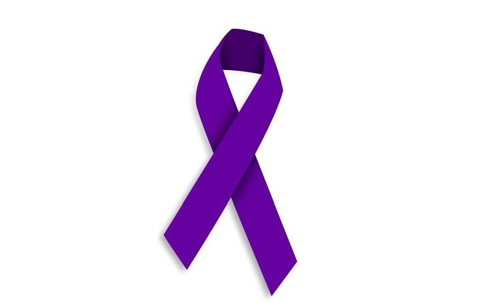

Фиолетовая лента в Испании и других странах — символ борьбы с гендерным насилием (violencia de género), прежде всего насилием в отношении женщин. 
Надпись «NO + VIOLENCIA DE GÉNERO» переводится как: «Нет гендерному насилию» или «Больше никакого гендерного насилия».
Вам нужно сфотографироваться на фоне баннера с этой надписью, а найдете вы его на площади, названной в честь героя, артиллериста, генерала, уроженца Овьедо.